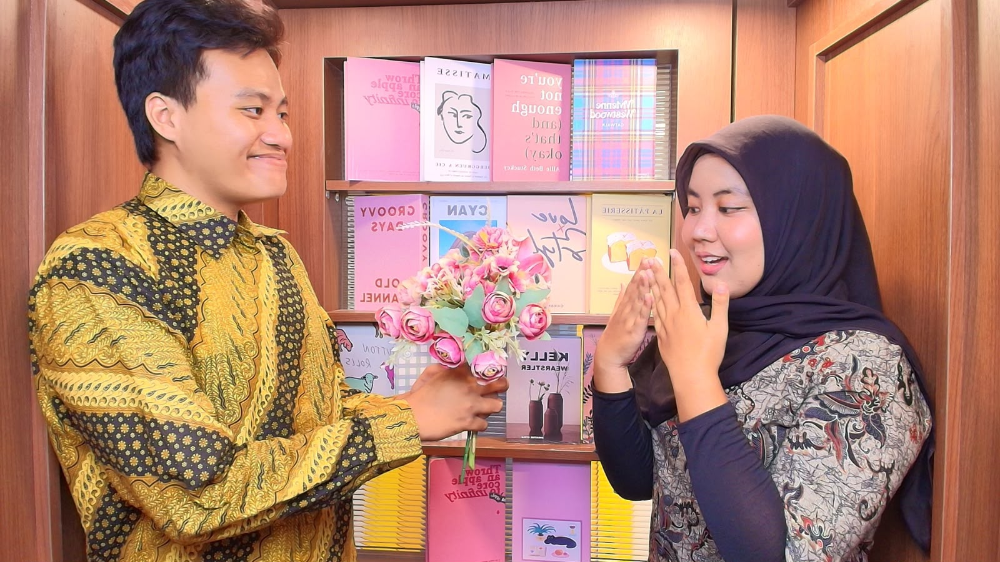
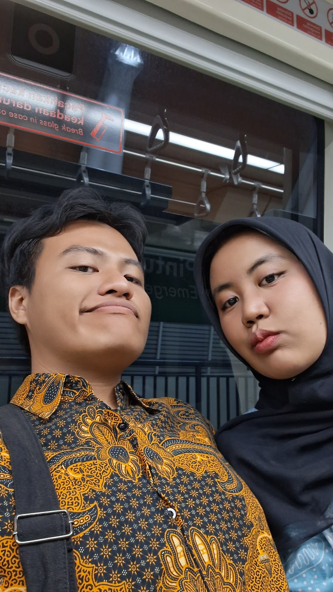
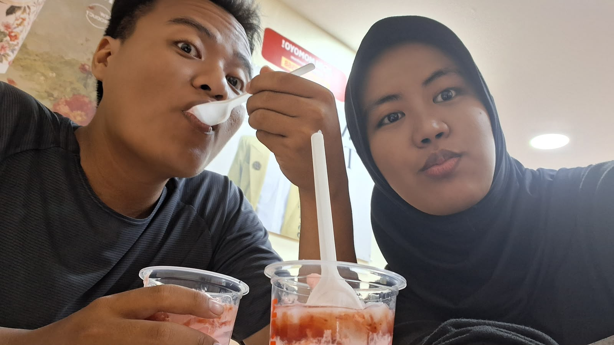

Menjalani Hari-Hari Bersamamu
"Gimana rasanya tumbuh dan belajar bareng kamu dari awal sampai hari ini..."
Awal Memulai Langkah
Di awal hubungan kita, kita sama-sama terbuka tentang hal-hal yang disukai dan yang kurang disukai. Aku sengaja memilih untuk buka-bukaan dari awal tentang siapa aku dan bagaimana aku, karena aku mau kamu mengenalku apa adanya—tanpa ada hal yang perlu aku sembunyikan.
Awalnya tentu enggak langsung mulus. Ada penyesuaian, perbedaan pandangan, hingga konflik kecil yang harus kita lewati. Tapi berkat komitmen yang kita pegang, kita pelan-pelan belajar memahami "aturan" dan batas nyaman satu sama lain.
Kita memilih untuk bertahan, mencoba menghindari hal-hal yang bisa bikin satu sama lain merasa tidak nyaman. Dan ternyata... keputusan untuk saling menurunkan gengsi dan saling mengerti di awal itu membawa kita sejauh ini. *It truly worked out so well.*

Tumbuh Melalui Setiap Momen
Jalan yang kita tempuh memang enggak selalu mulus. Ada kalanya kita berdebat dari hal sepele sampai isu yang cukup rumit. Aku sadar ada momen-momen di mana aku bikin kamu enggak nyaman, atau emosi enggak jelas yang sempat bikin suasana jadi kurang enak.
Tapi di balik semua dinamika itu, ada jauh lebih banyak kenangan manis yang bikin kita merasa begitu dekat. Momen-momen sederhana tapi menyenangkan, seperti habis makan seblak di rumah kamu, keseruan kita pas ngerayain ultah aku di Ragunan kemarin, sampai ke deeptalk kita di Taman Literasi.
Satu hal yang paling aku syukuri: dalam kondisi apa pun, kita selalu memilih untuk bertahan dan saling menjaga agar pertengkaran tak berlarut-larut. Rasanya sampai detik ini, kita enggak pernah benar-benar emosi di saat yang bersamaan. Aku sebahagia itu bisa menjalani dan merawat hubungan ini bareng kamu.

Rasanya Menjadikanmu Rumah
Kalau ditanya bagaimana rasanya menjadi pasanganmu sampai detik ini? Jawabannya sederhana: aku merasa tenang dan aman.
Di luar sana, aku mungkin sering terlihat kuat dan biasa saja menahan segalanya. Tapi sebenarnya tidak selalu begitu. Dan kehadiranmulah yang selalu jadi tempatku pulang setelah lelahnya seharian beraktivitas. Kamu selalu punya cara ajaib untuk meluruhkan semua rasa lelah itu.
Kamu bukan sekadar pasangan buat aku, tapi juga sahabat terbaik, tempat cerita paling aman, dan support system paling luar biasa. Terima kasih ya sudah menjadi rumah yang selalu hangat untuk aku pulang.

Ada banyak harapan dan doa buat kamu di hari spesial ini...
Continue to Wishes & Hopes ➔